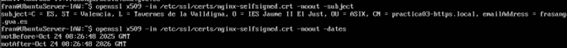
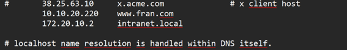
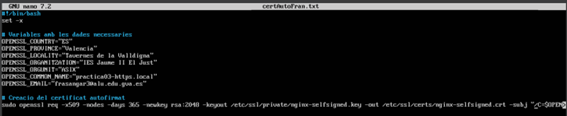
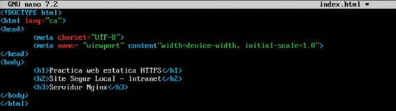
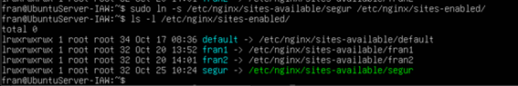
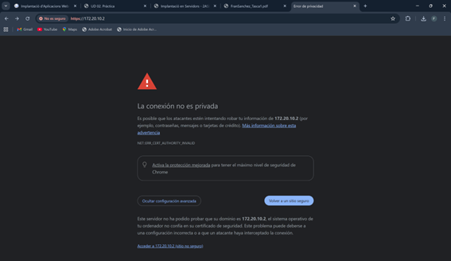
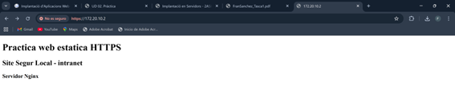
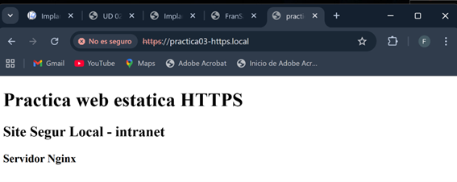
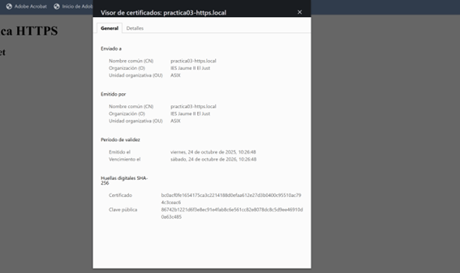
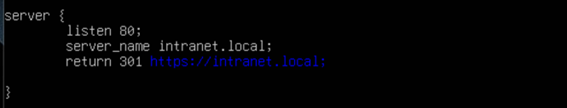

Pràctica certificat SSL/TLS
Primer he creat el certificat manualment

Per a consultar el ceritifcat i la data de caducitat:

Utilitzar la resolució estàtica, modificant el fitxer /etc/hosts de l’ordinador des del qual accedirem a la pàgina i poder accedir-hi mitjançant nom de domini.

Script per a automatitzar la instal·lació
Automatitzar la instal·lació d’una pila LEMP (instal·la cada element per separat)

Script per a automatitzar la creació d'un certificat autosignat
Automatitzar la creació i configuració d’un certificat auto signat SSL/TLS amb openssl per al servidor web Nginx.

Configurar un altre lloc segur
Per a configurar el lloc segur, ho farem al seguent fitxer de la seguent manera al directori /etc/nginx/sites-available/

Després al directori /var/www/ anem a crear el directori segur amb un index.html amb la següent estructura html:

Comprovem que la sintaxis es correcta.

Veiem que el fitxer segur no es troba a sites-enabled, per tant, el lloc no podria funcionar sense habilitar-lo abans.

Accés
Comprovar que s’hi pot accedir, tant per http com per https des d’un navegador web. Ens ix l’avis de seguretat abans d’accedir.

I si accedim ja ens apareix el contingut

Tant amb la IP com amb el nom

Podem veure el certificat que havíem creat

Redirecció
Redirigir http a https. Per a redirigir l’http a https, ho fem de la seguent manera al lloc segur, afegint les següents línies.

Comprovar el bon funcionament de la redirecció. Cuan fique http://intranet.local, automàticament m’envia a https://intranet.local